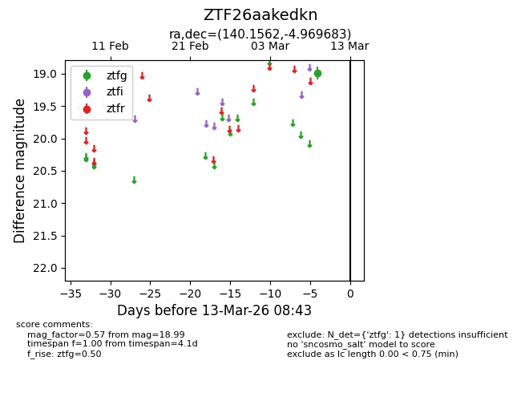
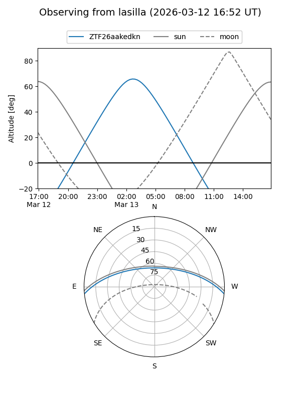
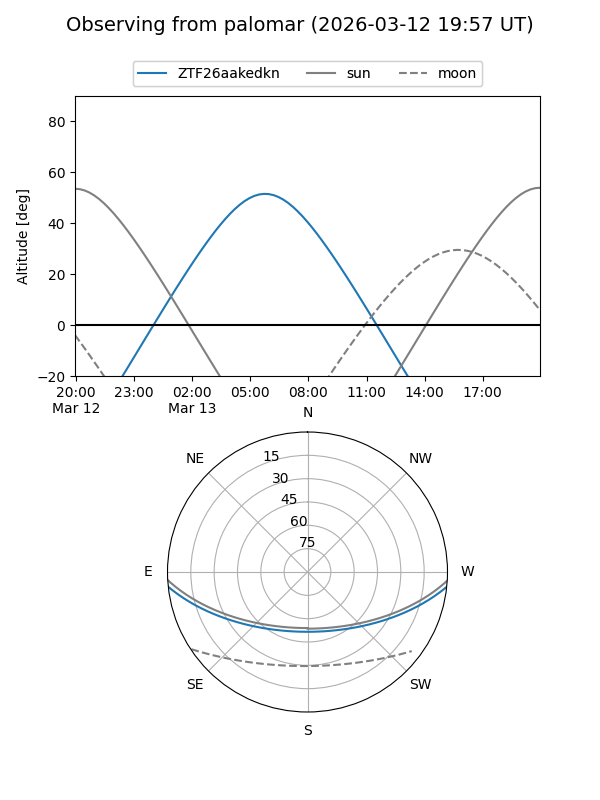

ZTF26aakedkn
Target ZTF26aakedkn at 2026-03-13 08:45
Aliases and brokers:
FINK: link
Lasair: link
ALeRCE: link
alt names
ZTF26aakedkn (ztf,fink_ztf)
Coordinates:
equatorial (ra, dec) = 140.1562,-4.96968
equatorial (HMS+DMS) = 09:20:37.48,-04:58:10.86
galactic (l, b) = (236.9022,+29.85145)
Flags:
Photometry:
last ztfg=18.99
1 ztfg detections
Lightcurve

Visibility


Additional plots